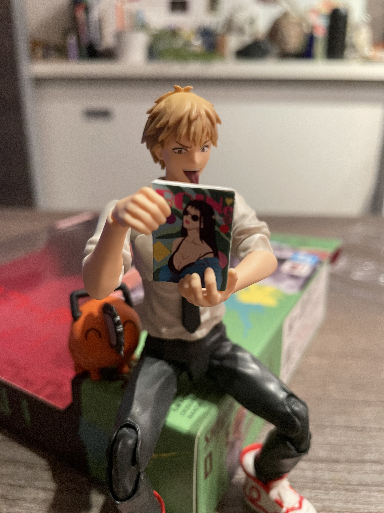
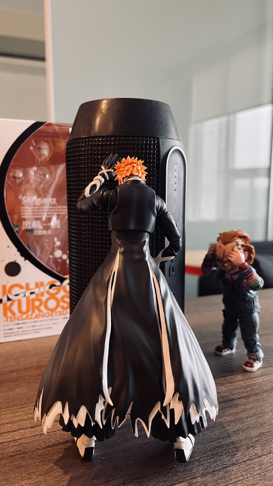
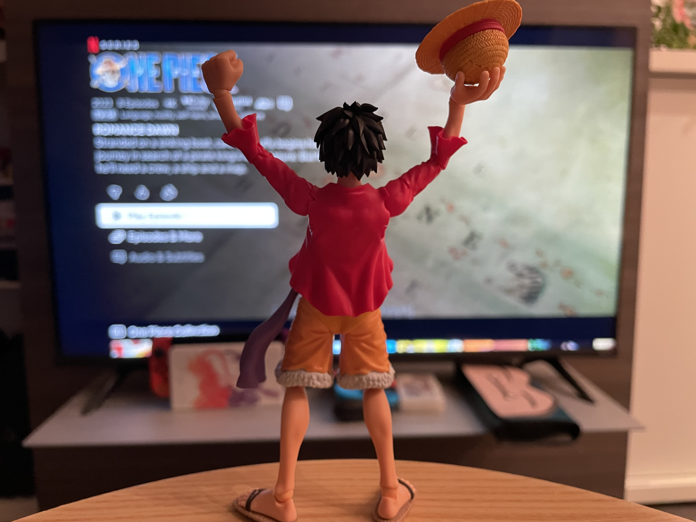
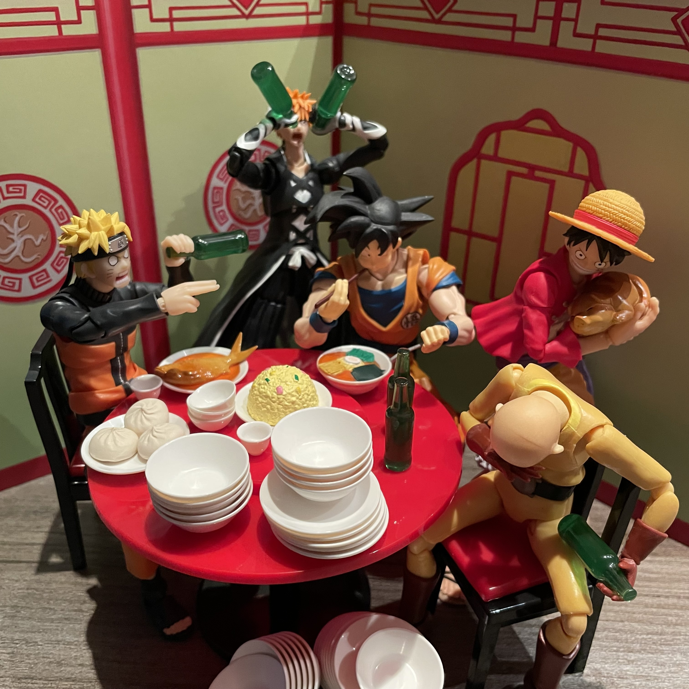
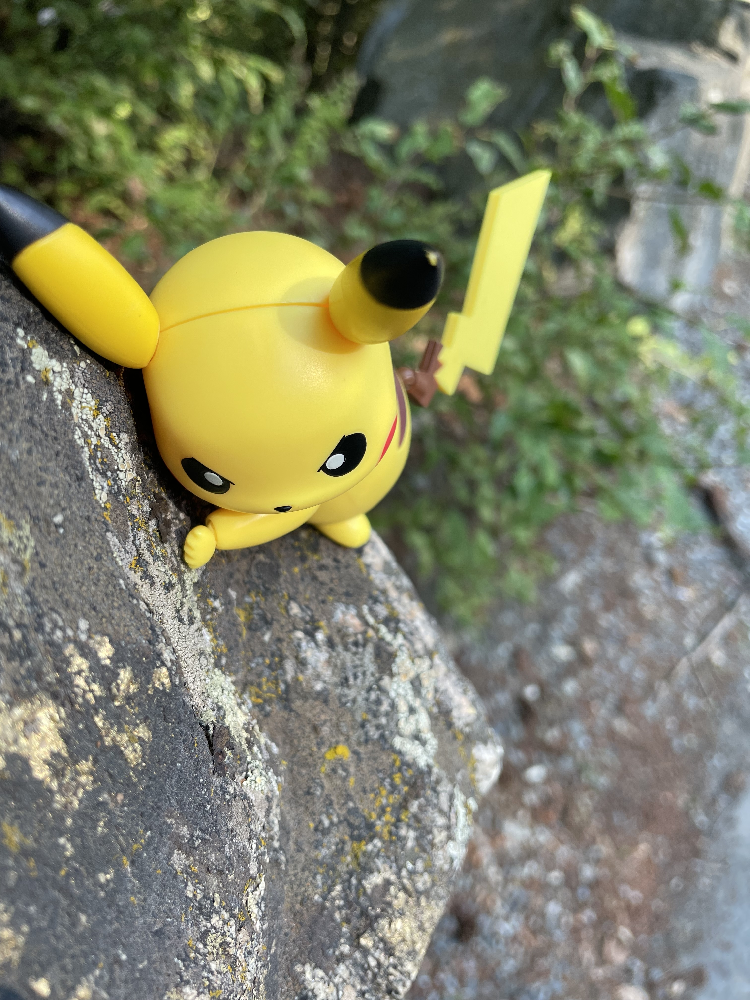
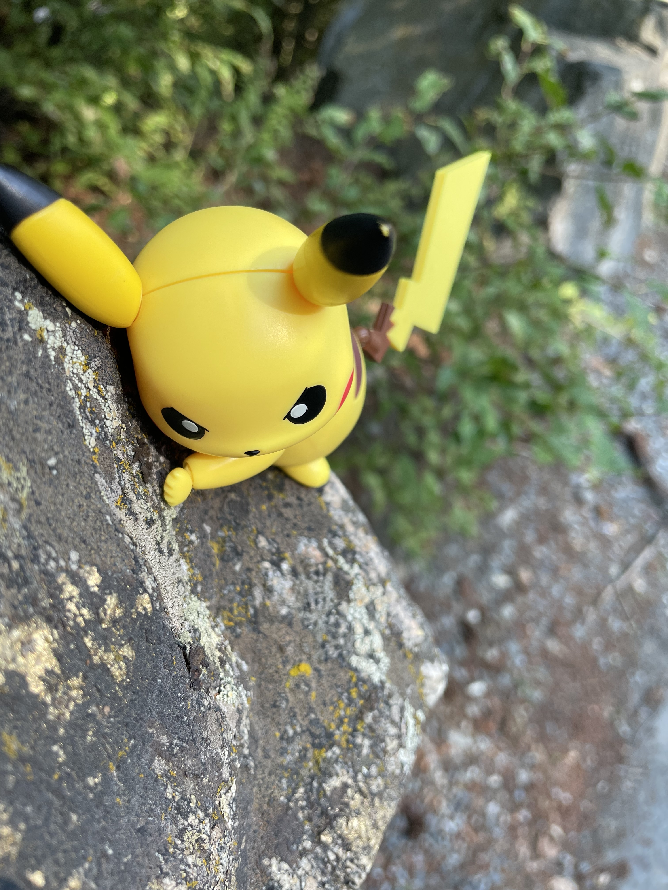
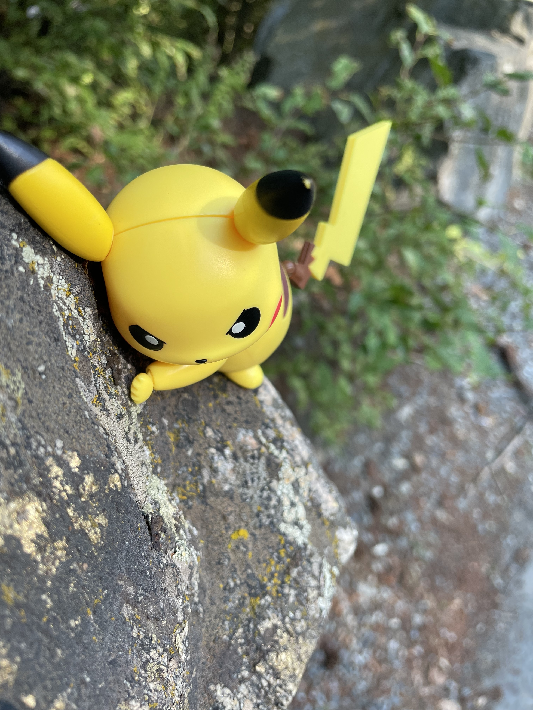

 


Hey there! I'm Mark, a passionate software developer with a love for technology and a curiosity that takes me all over the world—and to the beach whenever I can! I'm proud to call British Columbia my home, though my roots trace back to the beautiful islands of the Philippines. My journey has also taken me to Singapore, where I had the privilege of living and working for four years, expanding my horizons and learning from new experiences.
Creativity is a big part of who I am too. When I'm not coding or diving into new tech, I express myself through hobbies like 3D printing with a 3D pen, capturing moments in toy photography, or bringing stories to life with action figure stop-motion clips. These outlets keep my mind active and give me the perfect balance of fun and creativity.
Travel is one of my greatest joys. I've explored places like Japan, London, Egypt, and more, but at heart, I'm just as much a homebody who loves to unwind or by immersing myself in my gaming consoles or with mobile games,.
I'm also a lifelong Pokémon fan—I've been hooked on Pokémon Go since it launched in 2016, and there's something magical about exploring the world while catching Pokémon, reliving a bit of that childhood excitement.
And speaking of magic, I've always been enchanted by the Harry Potter universe. Whether it's revisiting the books, watching the movies, or debating which house I belong to (Gryffindor for sure!), Harry Potter has a special place in my heart. The themes of friendship, courage, and magic resonate with me deeply, and I'll always have a soft spot for the wizarding world.
Currently, I'm excited about my journey into the tech world after completing a software developer bootcamp. I'm eager to start my career as a junior developer, ready to tackle challenges, grow, and create things that make a difference. Coding, problem-solving, and dreaming up new solutions are what fuel my passion for tech.
While I'm focused on building my career, I always make time for travel and the thrill of discovering new places. Still, there's nothing quite like the quiet comfort of a cozy day at home, where I can unwind with a book (usually something magical) or a game.
I'm excited for what's next and look forward to connecting with others who share my passions or are on a similar path. Let's create something amazing together!